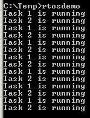
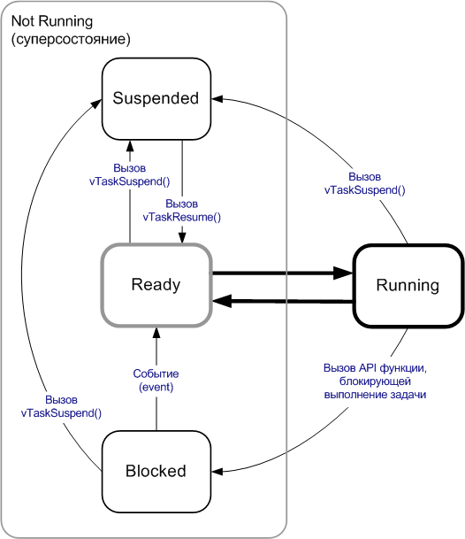
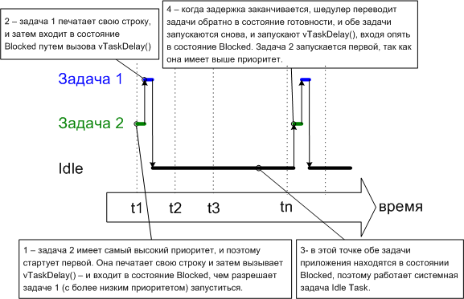
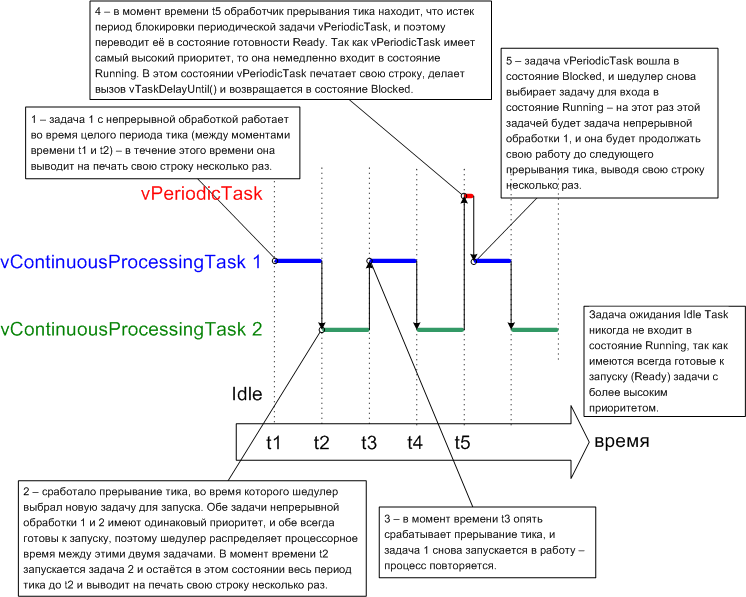
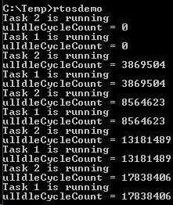
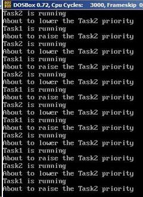
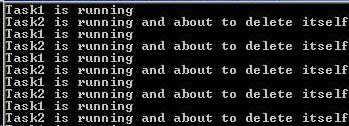
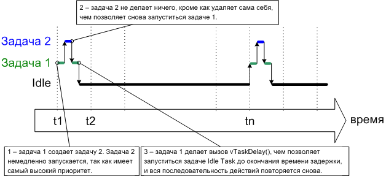

В системе FreeRTOS каждый поток выполнения называется 'задачей' (task). Нет абсолютного согласия в терминологии по компонентам внутри встраиваемых систем, но наверное предпочтительнее использовать вместо термина 'поток' (thread) термин 'задача' (task), поскольку thread (поток) может иметь более специфичное значение в зависимости от внешних ранее приобретенных знаний.
1.2 Функции задачи
Задачи реализованы как функции на языке C. Есть только одна особенность в прототипе такой функции - она должна возвращать void и принимать в качестве параметра указатель на void.
void ATaskFunction( void *pvParameters );
Каждая задача - это маленькая программа со своими собственными правами. Она имеет точку входа, нормально выполняет свой бесконечный цикл, из которого никогда не делает выход. Структура типичной задачи показана в листинге 2.
Задачи FreeRTOS не должны никоим образом делать возврат (выход) из своей функции - она не должна содержать оператор 'return', и выполнению не должно быть позволено доходить до конца функции. Если в функции больше нет надобности, вместо выхода из неё нужно явно удалить запущенную задачу. Это также демонстрируется в листинге 2.
Один и тот же код функции может использоваться для запуска любого количества одинаковых задач - каждая созданная задача имеет индивидуальную среду выполнения с собственным стеком и собственной копией любых автоматических (стековых) переменных, определенных в теле задачи.
void ATaskFunction( void *pvParameters )
{
/* Переменные могут быть определены точно так же, как и в обычной функции.
Каждый экземпляр созданной по этой функции задачи будет иметь собственную копию
переменной iVariableExample. Это не верно, если переменная была продекларирована
как статическая (static) – в этом случае будет сущесвовать только одна копия
переменной, и она будет использоваться совместно всеми созданными экземплярами
задачи. */
int iVariableExample = 0;
/* Задача должна быть нормально реализована как бесконечный цикл. */
for( ;; )
{
/* Код, который реализует функционал задачи, должен быть помещен здесь. */
}
/* Код должен быть организован так, чтобы в случае выхода (break) из указанного
выше бесконечного цикла задачи, задача должна быть удалена ПРЕЖДЕ чем
управление достигнет конца этой функции. Параметр NULL, переданный
vTaskDelete(), показывает, что должна быть удалена вызванная (эта, которая
работает) задача. */
vTaskDelete( NULL );
}
Листинг 2. Структура типичной функции задачи
1.3 Состояния задачи на верхнем уровне
Приложение может состоять из множества задач. Если микроконтроллер, выполняющий приложение, имеет только одно ядро (так бывает в большинстве малых встраиваемых систем), то в каждый момент времени может выполняться только какая-то одна задача. Это означает, что любая задача может находиться в одном из двух возможных состояний - запущена (Running) и не запущена (Not Running). Пока мы примем такое упрощение, однако надо иметь в виду, что на самом деле состояние Not Running имеет несколько разновидностей - подсостояний (это мы рассмотрим далее).
когда задача находится в состоянии Running, то процессор в настоящий момент выполняет её код. Когда задача находится в состоянии Not Running, то задача находится в бездействии, её текущий статус сохранен в готовности продолжить выполнение, как только шедулер примет решение перевести задачу в состояние Running. Когда задача продолжает выполнение, она начнет работу именно с той инструкции, где выполнение было прервано при выходе задачи из последнего состояния Running.
О задаче, переходящей из состояния Not Running в состояние Running, говорят, что она "подключилась" ("switched in" или "swapped in"). И аналогично, о задаче, переходящей из состояния Running в состояние Not Running говорят, что она "отключилась" ("switched out" или "swapped out"). Шедулер FreeRTOS - всего лишь некая сущность, которая может включить (in) и выключить (out) задачу.
1.4 Создание задач
API функция xTaskCreate()
Задачи создаются с использованием API функции xTaskCreate(). Очень важен тот факт, что задачи должны быть предварительно специальным образом подготовлены, чтобы стать фундаментальным компонентом многозадачной системы. Все примеры, приведенные в этой книге, используют для создания задач функцию xTaskCreate().
В Дополнении 5 описываются типы данных и используемые условные соглашения по именованию типов данных и функций.
portBASE_TYPE xTaskCreate( pdTASK_CODE pvTaskCode,
const signed portCHAR * const pcName,
unsigned portSHORT usStackDepth,
void *pvParameters,
unsigned portBASE_TYPE uxPriority,
xTaskHandle *pxCreatedTask );
Прототип API функции xTaskCreate().
Имя параметра, возвращаемое значение и описание:
pvTaskCode
Задачи - это простые C-функции, которые никогда не делают возврата из своего тела (постоянно выполняют свой бесконечный цикл). Параметр pvTaskCode - простой указатель на функцию (т. е. просто имя функции), которая реализует задачу.
pcName
Описательное имя для задачи. Оно никак не используется внутри FreeRTOS, и нужно только для целей отладки. Идентификация задачи по легкочитаемому имени намного проще, чем по хендлу задачи (handle).
В приложении указана константа времени компиляции configMAX_TASK_NAME_LEN, которая задает максимальную длину для этого имени - включая нулевой байт окончания строки. Если в качестве pcName предоставлена более длинная строка, то она молча урезается до величины, заданной configMAX_TASK_NAME_LEN.
usStackDepth
Каждая задача имеет собственное уникальное хранилище состояния, выделенное ядром при создании задачи. Значение параметра usStackDepth говорит ядру, какой величины стек необходимо создать.
Значение usStackDepth указывает количество слов, которое можно сохранить в стеке, а не количество байт. Например, если стек имеет ширину 32 бита, и переданное значение usStackDepth равно 100, то под стек будет выделено 400 байт (100 * 4 байт). Глубина стека, умноженная на его ширину, не должна превышать максимальное значение, которое может содержать переменная типа size_t.
Размер стека, используемого для задачи ожидания (idle task, об этой задаче подробнее говорится далее), задается константой configMINIMAL_STACK_SIZE. Значение, назначенное этой константе в демо-приложении FreeRTOS (для определенной архитектуры микроконтроллера) может быть использовано как минимально рекомендованное для любой задачи. Если Ваша программа использует пространство в стеке, то нужно указать для константы configMINIMAL_STACK_SIZE увеличенное значение.
Нет простого способа узнать, какого размера стек нужен для задачи. Этот размер можно вычислить, но в большинстве случаев можно просто назначить подходящее значение, подобранное опытным путем, либо взятое приблизительно. Подобрать правильный размер стека важно, чтобы обеспечить адекватное использование RAM без ненужных затрат. Часть 6 содержит информацию о том, как запросить размер стека, используемого задачей.
pvParameters
Функции задач принимают параметр, имеющий тип указателя на void (т. е. void*). Значение, указанное в pvParameters, будет передано в задачу. Несколько примеров в этом документе демонстрируют, как этот параметр может быть использован в реальных задачах.
uxPriority
Задает приоритет, с которым будет выполняться задача. Приоритеты могут быть назначены в любое значение от 0 минимальный приоритет до (configMAX_PRIORITIES – 1) максимальный приоритет.
Константа configMAX_PRIORITIES определяется пользователем. Нет ограничения на верхний предел для количества приоритетов, которые можно задать (кроме ограничения на лимит используемого типа данных ограничения по количеству RAM, доступному в микроконтроллере), но желательно использовать как можно меньшее количество приоритетов, которое действительно необходимо - с целью уменьшения расхода RAM.
Передача в параметре значения uxPriority выше (configMAX_PRIORITIES – 1) приведет к молчаливому назначению приоритета задачи в максимально допустимое значение configMAX_PRIORITIES.
pxCreatedTask
Параметр pxCreatedTask может использоваться для передачи наружу хендла созданной задачи. Этот хендл можно использовать как ссылку на задачу в вызовах API FreeRTOS, например для изменения приоритета задачи или для удаления задачи.
Если Ваше приложение не использует хендл задачи, то pxCreatedTask может быть установлен в NULL.
Возвращаемое значение
Имеется два возможных возвращаемых значения:
1. pdTRUE показывает, что задача успешно создана.
2. errCOULD_NOT_ALLOCATE_REQUIRED_MEMORY показывает, что задача не создана, так как в куче (heap) недостаточно свободной памяти для FreeRTOS, чтобы она могла выделить место для структур данных задачи и стека. Часть 5 предоставляет больше информации по управлению памятью.
Пример 1. Создание задачи
Дополнение 1 содержит информацию об инструментарии, необходимом для сборки проектов примеров.
Этот пример демонстрирует необходимые шаги для создания двух простых задач и для последующего запуска этих задач на выполнение. Задачи просто периодически выводят на печать строку, используя грубый пустой цикл для создания задержки. Обе задачи создаются с одинаковым приоритетом и абсолютно идентичны, отличаясь только строками, которые они выводят - см. Листинг 4 и Листинг 5 для их соответствующих реализаций.
Листинг 4. Реализация первой задачи, используемой в примере 1.
void vTask1( void *pvParameters )
{
const char *pcTaskName = "Task 1 is running\r\n";
volatile unsigned long ul;
/* Как и большинство задач, эта задача реализована на основе бесконечного цикла. */
for( ;; )
{
/* Вывод на печать имени этой задачи. */
vPrintString( pcTaskName );
/* Задержка на некоторый период времени. */
for( ul = 0; ul < mainDELAY_LOOP_COUNT; ul++ )
{
/* Этот цикл просто реализует задержку очень грубым методом.
В цикле не производится никаких действий. Далее будут приведены
примеры, в которых этот пустой цикл будет заменен соответствующей
функцией задержки / приостановки задачи (введение задачи в состояние
сна - sleep). */
}
}
}
Листинг 5. Реализация второй задачи, используемой в примере 1.
void vTask2( void *pvParameters )
{
const char *pcTaskName = "Task 2 is running\r\n";
volatile unsigned long ul;
/* Как и большинство задач, эта задача реализована на основе бесконечного цикла. */
for( ;; )
{
/* Вывод на печать имени этой задачи. */
vPrintString( pcTaskName );
/* Задержка на некоторый период времени. */
for( ul = 0; ul < mainDELAY_LOOP_COUNT; ul++ )
{
/* Этот цикл просто реализует задержку очень грубым методом.
В цикле не производится никаких действий. Далее будут приведены
примеры, в которых этот пустой цикл будет заменен соответствующей
функцией задержки / приостановки задачи (введение задачи в состояние
сна - sleep). */
}
}
}
Функция main() просто создает задачи перед запуском шедулера - см. Листинг 6.
Листинг 6. Запуск задач примера 1.
int main( void )
{
/* Создание одной из двух задач. Имейте в виду, что реальное приложение должно
проверить возвращаемое значение из вызова xTaskCreate(), чтобы удостовериться,
что задача была успешно создана. */
xTaskCreate( vTask1, /* Указатель на функцию, которая реализует задачу. */
"Task 1",/* Текстовое имя задачи. Этот параметр нужен только для
упрощения отладки. */
1000, /* Глубина стека - самые маленькие микроконтроллеры будут
использовать значение намного меньше, чем здесь
указано. */
NULL, /* Мы не используем параметр задачи. */
1, /* Задача будет запущена с приоритетом 1. */
NULL ); /* Мы не будем использовать хендл задачи. */
/* Создание другой задачи полностью совпадает с созданием первой,
приоритет задачи тот же. */
xTaskCreate( vTask2, "Task 2", 1000, NULL, 1, NULL );
/* Запуск шедулера, после чего задачи запустятся на выполнение. */
vTaskStartScheduler();
/* Если все хорошо, то управление в main() никогда не дойдет до этой точки,
и теперь шедулер будет управлять задачами. Если main() довела управление
до этого места, то это может означать, что не хватает памяти кучи
(heap) для создания специальной задачи ожидания (idle task, об этой задаче
далее). Часть 5 предоставляет больше информации по управлению памятью. */
for( ;; );
}
Выполнение примера 1 производит вывод, показанный на рисунке 2.

Рис. 2. Вывод, который производит при выполнении пример 1.
На рисунке 2 видно, что две задачи работают вместе, но поскольку они обе выполняются на одном процессоре, то реально все происходит несколько иначе. В действительности обе задачи быстро входят в состояние Running (запущено) и быстро выходят из него. Обе задачи работают с одинаковым приоритетом, и делят между собой процессорное время. Диаграмма реального процесса выполнения показана на рисунке 3.
Рис. 3. Реальный паттерн выполнения двух задач примера 1.
Пример 1 создает обе задачи в теле функции main() перед запуском шедулера. Также есть возможность создания задачи из кода другой задачи. В другом примере мы создаем задачу 1 из кода функции main(), и затем создаем задачу 2 из кода задачи 1. Для того, чтобы сделать это, нужно ввести изменения, как показано в листинге 7. Задача 2 не будет создана, пока не запустится шедулер, однако вывод, генерируемый измененным примером, должен быть таким же.
Листинг 7. Создание задачи из кода другой задачи - после того, как шедулер уже стартовал.
void vTask1( void *pvParameters )
{
const char *pcTaskName = "Task 1 is running\r\n";
volatile unsigned long ul;
/* Если этот код выполняется, то шедулер уже запустился. Создаем
здесь другую задачу перед входом в бесконечный цикл. */
xTaskCreate( vTask2, "Task 2", 1000, NULL, 1, NULL );
for( ;; )
{
/* Вывод на печать имени этой задачи. */
vPrintString( pcTaskName );
/* Задержка на некоторый период времени. */
for( ul = 0; ul < mainDELAY_LOOP_COUNT; ul++ )
{
/* Этот цикл просто реализует задержку очень грубым методом.
В цикле не производится никаких действий. Далее будут приведены
примеры, в которых этот пустой цикл будет заменен соответствующей
функцией задержки / приостановки задачи (введение задачи в состояние
сна - sleep). */
}
}
}
Пример 2. Использование параметра задачи
Две задачи, созданные в примере 1, почти одинаковы, отличаясь только текстом, который они выводят на печать. Дублирование кода может быть устранено простым созданием двух экземпляров одной и той же задачи. В этом случае параметр задачи можно использовать, чтобы передать каждой задаче отдельную строку для вывода.
Листинг 8 содержит код единой функции для всех задач (vTaskFunction), используемых в примере 2. Одиночная функция заменяет две функции задачи (vTask1 и vTask2), используемые в примере 1. Посмотрим, как параметр задачи преобразуется в тип char* для получения строки, которую нужно вывести на печать.
Листинг 8. Одна функция задачи, используемая для создания двух задач примера 2.
void vTaskFunction( void *pvParameters )
{
char *pcTaskName;
volatile unsigned long ul;
/* Строка для вывода на печать передается через параметр. Здесь
он преобразуется в указатель на символьную строку. */
pcTaskName = ( char * ) pvParameters;
/* Как и большинство задач, эта задача реализована на основе бесконечного цикла. */
for( ;; )
{
/* Вывод на печать имени этой задачи. */
vPrintString( pcTaskName );
/* Задержка на некоторый период времени. */
for( ul = 0; ul < mainDELAY_LOOP_COUNT; ul++ )
{
/* Этот цикл просто реализует задержку очень грубым методом.
В цикле не производится никаких действий. Далее будут приведены
примеры, в которых этот пустой цикл будет заменен соответствующей
функцией задержки / приостановки задачи (введение задачи в состояние
сна - sleep). */
}
}
}
Несмотря на то, что теперь реализация задач только одна (vTaskFunction), можно задать бОльшее, чем один, количество экземпляров задачи, Каждый созданный экземпляр задачи будет выполняться независимо от другого под управлением шедулера FreeRTOS.
Параметр pvParameters, передаваемый в функцию xTaskCreate(), используется для передачи строки текста, как показано в листинге 9.
Листинг 9. Функция main() для примера 2.
/* Определение строк, которые будут переданы через параметры задачи. Они определены
как константы (const) и не находятся в стеке, чтобы обеспечить их сохранность,
когда задачи выполняются. */
static const char *pcTextForTask1 = “Task 1 is running\r\n”;
static const char *pcTextForTask2 = “Task 2 is running\t\n”;
int main( void )
{
/* Создание одной из двух задач. */
xTaskCreate( vTaskFunction, /* Указатель на функцию, которая реализует
задачу. */
"Task 1", /* Текстовое имя задачи. Используется только
для упрощения отладки. */
1000, /* Глубина стека - самые маленькие микроконтроллеры
будут использовать значение намного меньше,
чем здесь указано. */
(void*)pcTextForTask1, /* Передача печатаемого задачей текста как
параметр задачи. */
1, /* Задача будет запущена с приоритетом 1. */
NULL ); /* Мы не будем использовать хендл задачи. */
/* Создание другой задачи происходит точно так же. Обратите внимание, что несколько
задач создается из ОДНОЙ И ТОЙ ЖЕ реализации задачи (vTaskFunction). Различие
только в величине параметра, переданного для вывода строки. Создается два
экземпляра одной и той же задачи. */
xTaskCreate( vTaskFunction, "Task 2", 1000, (void*)pcTextForTask2, 1, NULL );
/* Запуск шедулера, чтобы наши задачи смогли выполняться. */
vTaskStartScheduler();
/* Если все хорошо, то управление в main() никогда не дойдет до этой точки,
и теперь шедулер будет управлять задачами. Если main() довела управление до
этого места, то это может означать, что не хватает памяти кучи (heap)
для создания специальной задачи ожидания (idle task, об этой задаче далее).
Часть 5 предоставляет больше информации по управлению памятью. */
for( ;; );
}
Вывод, производимый примером 2, абсолютно такой же, как в примере 1 (показано на рисунке 2).
1.5. Приоритеты задачи
Параметр uxPriority API функции xTaskCreate() назначает начальный приоритет для создаваемой задачи. Приоритет может быть изменен после запуска шедулера при помощи API функции vTaskPrioritySet().
Максимально возможное количество доступных приоритетов задается в приложении константой времени компиляции configMAX_PRIORITIES в файле FreeRTOSConfig.h. Система FreeRTOS сама по себе не ограничивает максимально возможное значение для этой константы, однако нужно помнить, что чем больше значение configMAX_PRIORITIES, тем больше потребляется ядром памяти RAM, поэтому рекомендуется всегда устанавливать эту константу на минимально возможное значение.
FreeRTOS не накладывает никаких ограничений на то, как приоритеты могут быть назначены задачам. Любое количество задач могут иметь одинаковый приоритет, что предоставляет максимум гибкости для разработки приложения. Вы можете назначить уникальный приоритет каждой задаче, если это необходимо (в соответствии с требованиями некоторых алгоритмов, использующих шедулинг), и в этом тоже нет никаких ограничений.
Значения приоритетов, имеющих малую числовую величину, предназначены для низкоприоритетных задач, значение 0 соответствует самому низкому возможному приоритету. Таким образом, диапазон возможных приоритетов лежит от 0 до (configMAX_PRIORITIES – 1).
Шедулер всегда предоставляет возможность запуститься для задачи с наивысшим приоритетом и войти для неё в состояние Running. Когда несколько задач имеют одинаковый приоритет, и они могут быть запущены, то шедулер будет переводить каждую из этих задач в состояние Running и обратно по очереди в цикле. Это поведение было показано в недавних примерах, где обе тестовые задачи были созданы с одинаковым приоритетом, и обе всегда могли быть запущены. Каждая из этих задач выполнялась в фиксированном интервале времени, так называемом "слайсе времени" ("time slice", далее этот интервал будем называть просто "слайс"), когда задача входит в режим Running на начале слайса и выходит из режима Running в конце этого слайса и в начале следующего. На рисунке 3 интервал времени между t1 и t2 равен одному слайсу времени.
Чтобы шедулер мог определить - какую задачу нужно в начале каждого слайса, шедулер сам запускается на выполнение в конце каждого слайса времени. Для этой цели используются периодическое прерывание, называемое тиком (tick interrupt). Продолжительность слайса времени устанавливается по частоте срабатывания прерываний (тиков), которая конфигурируется константой времени компиляции configTICK_RATE_HZ в файле FreeRTOSConfig.h. Например, если configTICK_RATE_HZ установлена в 100 (Гц), то длительность слайса составит 10 мс. Рисунок 3 может быть расширен, чтобы показать также работу и самого шедулера во всей последовательности выполнения задач. Это показано на рисунке 4.
Имейте в виду, что вызовы API функций FreeRTOS всегда указывают время в тиках прерываний (обычно их просто называют 'тики', 'ticks'). Константа portTICK_RATE_MS предоставлена для того, чтобы можно было преобразовать интервал времени в тиках в интервал времени в миллисекундах. Доступная разрешающая способность зависит от частоты тиков.
Значение счетчика тиков 'tick count' равно количеству произошедших прерываний тиков с момента старта шедулера; предполагается, что в счетчике тиков не было переполнения. Приложения пользователя не должны отслеживать переполнения при указании периода задержки, так как целостность отсчета времени обеспечивается внутри ядра FreeRTOS.

Рис. 4. Последовательность выполнения, расширенная, чтобы показать выполнение прерывания тиков.
На рисунке 4 красной линией показано, когда выполняется само ядро (обработчик прерывания тиков). Черные стрелки показывают последовательность выполнения от задачи до прерывания, и затем обратно от прерывания к другой задаче.
Пример 3. Экспериментирование с приоритетами
Как уже говорилось, шедулер всегда обеспечивает для задачи с наивысшим приоритетом возможность запуска при выборе задачи для входа в состояние Running. В наших недавних примерах были созданы две задачи с одинаковым приоритетом, так они входили по циклу в состояние Running и выходили из него по очереди. Этот пример рассматривает что произойдет, когда мы изменим приоритет одной из двух задач, созданных в примере 2. Это произойдет, когда первая задача будет создана с приоритетом 1, а вторая задача с приоритетом 2. Код для создания задач показан в листинге 10. Одиночная функция, которая используется для реализации обоих задач, остается неизменной, она просто периодически выводит на печать строку, используя пустой цикл для организации задержки.
Листинг 10. Создание двух задач с разными приоритетами.
/* Определение строк, которые будут переданы через параметры задачи. Они определены
как константы (const) и не находятся в стеке, чтобы обеспечить их сохранность,
когда задачи выполняются. */
static const char *pcTextForTask1 = “Task 1 is running\r\n”;
static const char *pcTextForTask2 = “Task 2 is running\t\n”;
int main( void )
{
/* Создание первой задачи с приоритетом 1. Приоритет - предпоследний
параметр. */
xTaskCreate( vTaskFunction, "Task 1", 1000, (void*)pcTextForTask1, 1, NULL );
/* Создание второй задачи с приоритетом 2. */
xTaskCreate( vTaskFunction, "Task 2", 1000, (void*)pcTextForTask2, 2, NULL );
/* Запуск шедулера, чтобы наши задачи смогли выполняться. */
vTaskStartScheduler();
return 0;
}
Вывод, производимый примером 3, показан на рисунке 5. Шедулер всегда будет выбирать для запуска задачу с наивысшим приоритетом. Задача 2 имеет приоритет выше, чем у задачи 1, и задача 2 всегда допустима для запуска; поэтому только задача 2 всегда входит в режим Running. Так как задача 1 никогда не входит в режим Running, то она не выводит строк на печать. О задаче 1 говорят как о 'зависшей', поскольку задача 2 не дает ей свободного процессорного времени.

Рис. 5. Запуск обоих тестовых задач с разными приоритетами.
Задача 2 всегда готова к запуску, потому что она никогда не ждет какого-то события - она либо крутится в пустом цикле, либо печатает вывод строки на терминал.
Рисунок 6 показывает последовательность выполнения примера 3.

Рис. 6. Диаграмма выполнения, когда одна задача имеет более высокий приоритет, чем другая.
1.6. Что означает состояние задачи ‘NOT RUNNING’ (не запущено)
В прошлых примерах каждая создаваемая задача всегда нуждалась в каких-то действиях (пусть даже пустых в виде цикла задержки), и в них никогда не нужно было ожидать чего-либо. Поскольку такие задачи не ожидают никаких событий, то они всегда были готовы войти в состояние Running. Такой тип задачи с продолжающейся обработкой имеет ограниченное применение, потому что такую задачу можно создать только с самым низким приоритетом. Если же такая задача будет запущена не с самым низким приоритетом, то она не даст запуститься задачам с более низким приоритетом.
Чтобы сделать Ваши задачи в приложении действительно полезными, нам нужен метод, который позволит управлять задачей по событию. Задача, управляемая событием, запускается в работу (делает обработку) только после возникновения переключающего состояние задачи события, и такая задача не может войти в состояние Running, пока такое событие не произойдет. Как уже говорилось, шедулер всегда выбирает для запуска задачу с наивысшим приоритетом, которая МОЖЕТ запуститься. То, что высокоприоритетные задачи в настоящий момент НЕ МОГУТ запуститься означает, что шедулер их пока не может выбрать и должен вместо этого выбрать одну из задач с более низким приоритетом. Таким образом, использование управляемых событиями задач означает, что задачи могут быть созданы с некоторыми разными приоритетами, причем высокоуровневые задачи не будут полностью отнимать процессорное время у низкоуровневых.
Состояние Blocked (заблокировано)
Говорят, что ожидающая событие задача находится в состоянии Заблокировано (Blocked state), которое является подсостоянием состояния Not Running.
Задачи могут войти в Blocked state для ожидания событий двух разных типов:
1. События времени - событие, которое возникает при истечении периода задержки или при достижении абсолютного времени. Например, задача может войти в Blocked state для ожидания прохождения 10 миллисекунд времени.
2. События синхронизации - событие, поступившее от другой задачи или от прерывания. Например, задача может войти в Blocked state для ожидания поступления данных (появления их в очереди). События синхронизации покрывают широкий диапазон типов событий.
Во FreeRTOS могут использоваться очереди, двоичные семафоры, семафоры со счетчиком, рекурсивные семафоры, мьютексы - для создания событий синхронизации. Части 2 и 3 рассматривают это более подробно.
Можно устроить для задачи событие синхронизации с таймаутом, и эффективно обрабатывать оба типа событий (события времени и синхронизации). Например, задача может ожидать максимум 10 миллисекунд события появления данных в очереди. Задача покинет состояние Blocked state либо при поступлении данных на очереди, либо по истечении 10 миллисекунд (что означает таймаут поступления данных).
Состояние Suspended (приостановлено)
Suspended также является подсостоянием состояния Not Running. Задачи в состоянии suspended недоступны для шедулера. Есть только один способ входа в состояние Suspended - через вызов API функции vTaskSuspend(), и только один способ выхода из состояния Suspended - через вызов API функции vTaskResume() или (если вызов происходит из прерывания) xTaskResumeFromISR(). Большинство приложений никогда не используют состояние Suspended.
void vTaskSuspend( xTaskHandle pxTaskToSuspend );
Чтобы функция vTaskSuspend была доступна, нужно включить заголовочный файл task.h, и задать макроопределение INCLUDE_vTaskSuspend в значение 1. Функция vTaskSuspend приостанавливает задачу, переводя её в состояние Suspended, освобождая тем самым процессорное время для других задач. Вызовы vTaskSuspend не аккумулятивны, то есть вызов vTaskSuspend дважды для той же самой задачи все равно требует однократного вызова vTaskResume() для возобновления этой приостановленной задачи. Параметр pxTaskToSuspend передает хендл задачи, которая должна быть приостановлена. Если передать в качестве параметра NULL, то будет приостановлена вызывающая задача (т. е. если задача вызовет vTaskSuspend с параметром NULL, то она приостановит саму себя). Пример использования:
void vAFunction( void )
{
xTaskHandle xHandle;
// Создание задачи, сохранение значения хендла.
xTaskCreate( vTaskCode, "NAME", STACK_SIZE, NULL, tskIDLE_PRIORITY, &xHandle );
// ...
// Использование хендла для приостановки созданной задачи.
vTaskSuspend( xHandle );
// ...
// Созданная задача не будет работать в это время, за исключением случаев,
// когда другая задача вызовет vTaskResume( xHandle ).
//...
// Приостановка задачей самой себя.
vTaskSuspend( NULL );
// Мы не сможем попасть в эту точку кода, пока другая задача не вызовет
// vTaskResume с хендлом этой задачи в качестве параметра.
}
Таким образом, если задача находится в состоянии Suspended (приостановлено), то вывести из этого состояния может только вызов функции vTaskResume.
void vTaskResume( xTaskHandle pxTaskToResume );
Чтобы функция vTaskResume была доступна для использования в коде программы, нужно подключить заголовочный файл task.h и определить макро INCLUDE_vTaskSuspend в значение 1. В качестве параметра передается хендл возобновляемой задачи. После вызова vTaskResume задача переводится в состояние Ready (готова к запуску), т. е. выполнение задачи будет возобновлено шедулером. Пример использования:
void vAFunction( void )
{
xTaskHandle xHandle;
// Создание задачи, сохранение хендла.
xTaskCreate( vTaskCode, "NAME", STACK_SIZE, NULL, tskIDLE_PRIORITY, &xHandle );
// ...
// Использование этого хендла для приостановки созданной задачи.
vTaskSuspend( xHandle );
// ...
// Созданная задача не будет работать в течение этого периода, пока
// другая задача не вызовет vTaskResume( xHandle ).
//...
// Самостоятельное возобновление приостановленной задачи.
vTaskResume( xHandle );
// Созданная задача еще раз получит процессорное время микроконтроллера
// в соответствии с назначенным приоритетом в системе.
}
Для возобновления функций из тела обработчика прерывания (ISR) служит функция xTaskResumeFromISR.
portBASE_TYPE xTaskResumeFromISR( xTaskHandle pxTaskToResume );
Чтобы функция xTaskResumeFromISR была доступна для использования в коде программы, нужно подключить заголовочный файл task.h и определить макросы INCLUDE_vTaskSuspend и INCLUDE_xTaskResumeFromISR в значение 1. Подробности см. в секции конфигурирования FreeRTOS. В качестве параметра передается хендл возобновляемой задачи.
Функция xTaskResumeFromISR() не должна использоваться в целях синхронизации задачи с прерыванием, если есть шанс, что задача еще не была остановлена, так как такая ситуация может привести к пропуску прерываний. Использование семафора для синхронизации позволит обойти эту проблему.
На выходе функция xTaskResumeFromISR возвратит pdTRUE, если возобновление задачи должно произойти при переключении контекста, иначе будет возвращено pdFALSE. Это используется обработчиком прерывания, чтобы определить, нужно ли делать переключение контекста после завершения ISR. Пример использования:
xTaskHandle xHandle;
void vAFunction( void )
{
// Создание задачи, сохранение хендла.
xTaskCreate( vTaskCode, "NAME", STACK_SIZE, NULL, tskIDLE_PRIORITY, &xHandle );
// ... остальная часть кода.
}
void vTaskCode( void *pvParameters )
{
// Задача, которая приостановлена и возобновлена.
for( ;; )
{
// ... здесь выполните некоторую функцию.
// Эта задача приостанавливает сама себя.
vTaskSuspend( NULL );
// Задача теперь приостановлена, так что в это место управление не дойдет,
// пока ISR не возобновит эту задачу.
}
}
void vAnExampleISR( void )
{
portBASE_TYPE xYieldRequired;
// Возобновление приостановленной задачи.
xYieldRequired = xTaskResumeFromISR( xHandle );
if( xYieldRequired == pdTRUE )
{
// Мы должны переключить контекст, поэтому ISR вернет управление
// в другую задачу.
// Примечание: как это будет осуществлено, зависит от порта FreeRTOS,
// который Вы используете. Для получения информации ознакомьтесь
// с документацией на Ваш порт.
portYIELD_FROM_ISR();
}
}
Состояние Ready (готово к запуску)
О задачах, которые находятся в состоянии Not Running, а также не в состояниях Blocked или Suspended, говорят, что они находятся в состоянии Ready. Они могут быть запущены и, таким образом, 'готовы к запуску' (Ready), но в настоящий момент не находятся в состоянии Running.
Полная диаграмма перехода задачи из одного состояния в другое
Рисунок 7 расширяет предыдущую упрощенную диаграмму состояний, чтобы показать все подсостояния Not Running, описанные в этой секции. Задачи, создаваемые в недавних примерах, не использовали состояния Blocked или Suspended и переходили только между состояниями Ready и Running - как показано толстыми стрелками на рисунке 7.

Рис. 7. Полная машина состояний задачи.
Пример 4. Использование состояния Blocked для создания задержки
Все задачи, создаваемые в недавних примерах, были 'периодическими' - они делали задержку на некоторый период, печатали свою строку, генерировали задержку снова, снова печатали строку, и так далее по кругу. Задержка генерировалась очень грубым методом с использованием пустого цикла - задача просто опрашивала значение инкрементируемой переменной цикла на достижение им фиксированного значения. В примере 3 хорошо виден недостаток такого метода. При прохождении пустого цикла задача остается в состоянии Ready, впустую отнимая полезное процессорное время от других задач.
Имеются также некоторые другие недостатки любой формы опроса (polling), заключающиеся не только в неэффективности. Во время опроса задача не делает действительно полезной работы, однако использует при этом процессорное время по максимуму. В примере 4 такое поведение исправлено путем замены опроса в пустом цикле вызовом API функции vTaskDelay(), прототип которой показан ниже. Новое определение задачи показано в листинге 12.
Функция vTaskDelay() помещает вызывавшую её задачу в состояние Blocked на фиксированное количество тиков прерываний. Находясь в состоянии Blocked, задача не использует процессорное время, поэтому процессор загружен только полезной работой.
Прототип API функции vTaskDelay():
void vTaskDelay( portTickType xTicksToDelay );
xTicksToDelay
Количество тиков прерываний, в течение которых вызывающая задача должна оставаться в состоянии Blocked перед переходом обратно в состояние Ready.
Например, если задача сделала вызов vTaskDelay( 100 ), а счетчик тиков (системная переменная FreeRTOS) при этом был равен 10000, то задача немедленно войдет в состояние Blocked и останется в нем до тех пор, пока счетчик тиков не достигнет 10100.
Константа portTICK_RATE_MS может использоваться для преобразования миллисекунд в тики.
Листинг 12. Исходный код примера задачи после того, как пустой цикл был заменен на вызов vTaskDelay().
void vTaskFunction( void *pvParameters )
{
char *pcTaskName;
/* Строка для вывода на печать, переданная через параметр. Здесь
параметр преобразуется в указатель на строку. */
pcTaskName = ( char * ) pvParameters;
/* Как и большинство других задач, эта задача реализована как бесконечный цикл. */
for( ;; )
{
/* Печать имени этой задачи. */
vPrintString( pcTaskName );
/* Задержка на некоторый период времени. Эта задержка создается благодаря
использованию вызова vTaskDelay(), которым задача помещается в состояние
Blocked до истечения периода задержки. Период задержки указывается в 'тиках',
но можно использовать константу portTICK_RATE_MS для преобразования
(более удобной для пользователя) величины миллисекунд в тики.
В нашем случае указан период 250 миллисекунд. */
vTaskDelay( 250 / portTICK_RATE_MS );
}
}
Несмотря на то, что на этот раз обе задачи также были созданы с разными приоритетами, они теперь обе могут запускаться. Вывод примера 4 показан на рисунке 8, что подтверждает такое ожидаемое поведение.

Рис. 8. Вывод, который производится при выполнении примера 4.
Последовательность выполнения, показанная на рисунке 9, объясняет, почему обе задачи теперь работают, несмотря на то, что они созданы с разными приоритетами. Для упрощения выполнение самого ядра на рисунке не показано.
Задача ожидания (idle task) всегда создается автоматически, когда запускается шедулер, чем обеспечивается выполнение всегда как минимум одной задачи, которая всегда может быть запущена (т. е. найдется всегда как минимум одна задача, находящаяся в состоянии Ready). В секции главы 1.7 задача Idle Task описывается более подробно.

Рис. 9. Последовательность выполнения, когда задачи используют vTaskDelay() вместо пустого цикла.
Изменена только реализация наших двух задач, их функциональность не поменялась. Сравнение рисунков 9 и 4 показывает, что эта функциональность достигнута более эффективным способом.
Рисунок 4 показывает диаграмму выполнения, когда задачи используют пустой цикл для создания задержки - из за этого они всегда могут быть запущены, и используют процессорное время впустую. Рисунок 9 показывает диаграмму выполнения, когда задачи входят в состояние Blocked на весь период задержки, поэтому процессорное время используется только для действительно необходимой работы (для этого примера - простой вывод сообщения на печать в экран консоли).
В сценарии на рисунке 9 каждый раз задачи покидают состояние Blocked и работают только в части периода тика, перед тем как снова войти в состояние Blocked. Почти все процессорное время оказывается свободным - нет задач приложения, которые могут запуститься (нет задач приложения в состоянии Ready), и нет задач, чтобы шедулер их выбрал для входа в состояние Running. Поэтому будет запущена задача Idle Task. Время, в котором работает задача Idle Task, дает возможность измерить запас процессорного времени в системе.
API функция vTaskDelayUntil()
Функция vTaskDelayUntil() работает аналогично vTaskDelay(). Как было продемонстрировано, параметр функции vTaskDelay() указывает количество тиков прерываний, которые должны произойти между вызовом из задачи vTaskDelay() и моментом времени, когда та же самая задача выйдет снова из состояния Blocked. Величина времени, в течение которого задача остается заблокированной, указывается в параметре vTaskDelay(), но реальное время, в которое задача покинет заблокированное состояние, отсчитывается относительно времени, когда был произведен вызов vTaskDelay(). Вместо этого в параметре функции vTaskDelayUntil() указывается явное значение счетчика тиков, на котором вызывающая эту функцию задача должна перейти из состояние Blocked в состояние Ready. API функция vTaskDelayUntil() должна использоваться, когда требуется фиксированный период выполнения задачи (например, Вы хотите, чтобы задача выполнялась периодически с фиксированной частотой). Так как время разблокировки вызывающей задачи является абсолютным (в отличие от относительного, отсчитываемого от вызова функции, как в случае с vTaskDelay()).
void vTaskDelayUntil( portTickType * pxPreviousWakeTime,
portTickType xTimeIncrement );
|
Имя параметра |
Описание |
|
pxPreviousWakeTime |
Этот параметр поименован так из предположения, что vTaskDelayUntil() выполняется периодически и с фиксированной частотой. В этом случае переменная, на которую указывает pxPreviousWakeTime, удерживает время, в которое задача покинула состояние Blocked (т. е. время, когда задача 'проснулась'). Это время используется как точка отсчета для вычисления момента времени, когда произойдет следующий выход из состояния Blocked. |
|
xTimeIncrement |
Этот параметр также поименован в предположении, что функция vTaskDelayUntil() используется для реализации, которая выполняется периодически и с фиксированной частотой - частота устанавливается значением параметра xTimeIncrement. Величина xTimeIncrement указывается в 'тиках'. Можно использовать константу portTICK_RATE_MS для преобразования миллисекунд в тики. |
Пример 5. Преобразование задач из примера 4 для использования функции vTaskDelayUntil()
Две задачи, созданные в примере 4, являются периодическими, но использование vTaskDelay() не гарантирует, что частота запуска задачи будет фиксированной, так как время, в которое задача покидает состояние Blocked, отсчитывается относительно момента вызова vTaskDelay(). Преобразование задач на использование vTaskDelayUntil() вместо vTaskDelay() решит эту потенциальную проблему.
Листинг 14. Реализация примера задачи с использованием vTaskDelayUntil().
void vTaskFunction( void *pvParameters )
{
char *pcTaskName;
portTickType xLastWakeTime;
/* Строка для вывода на печать, переданная через параметр. Здесь
параметр преобразуется в указатель на строку. */
pcTaskName = ( char * ) pvParameters;
/* Переменная xLastWakeTime нуждается в инициализации текущим
значением счетчика тиков. Имейте в виду, переменная записывается
явно только в этот момент. Затем xLastWakeTime обновляется
автоматически внутри функции vTaskDelayUntil(). */
xLastWakeTime = xTaskGetTickCount();
/* Как и большинство других задач, эта задача реализована как бесконечный цикл. */
for( ;; )
{
/* Печать имени этой задачи. */
vPrintString( pcTaskName );
/* Эта задача должна выполняться точно каждые 250 миллисекунд. Как и
в функции vTaskDelay(), время измеряется в тиках, и константа
portTICK_RATE_MS используется для преобразования миллисекунд в тики.
Переменная xLastWakeTime автоматически обновляется внутри функции
vTaskDelayUntil(), и нигде явно в коде задачи переменная xLastWakeTime
не обновляется. */
vTaskDelayUntil( &xLastWakeTime, ( 250 / portTICK_RATE_MS ) );
}
}
Вывод, производимый примером 5, абсолютно совпадает с выводом из примера 4, показанным на рисунке 8.
Пример 6. Комбинирование блокирующихся и не блокирующихся задач
Предыдущие примеры рассматривали поведение обоих задач с опросом и задач с блокированием в изоляции друг от друга. Этот пример закрепляет установленное ожидаемое поведение системы путем демонстрации последовательности выполнения, где две схемы поведения комбинируются следующим образом:
Листинг 15. Задача с непрерывной обработкой, используемая в примере 6.
void vContinuousProcessingTask( void *pvParameters )
{
char *pcTaskName;
/* Строка для вывода на печать, переданная через параметр. Здесь
параметр преобразуется в указатель на строку. */
pcTaskName = ( char * ) pvParameters;
/* Как и большинство других задач, эта задача реализована как бесконечный цикл. */
for( ;; )
{
/* Печать имени этой задачи, что постоянно повторяется без блокирования
или задержки. */
vPrintString( pcTaskName );
}
}
Листинг 16. Периодически выполняемая задача, используемая в примере 6.
void vPeriodicTask( void *pvParameters )
{
portTickType xLastWakeTime;
/* Переменная xLastWakeTime нуждается в инициализации текущим
значением счетчика тиков. Имейте в виду, переменная записывается
явно только в этот момент. Затем xLastWakeTime обновляется
автоматически внутри функции vTaskDelayUntil(). */
xLastWakeTime = xTaskGetTickCount();
/* Как и большинство других задач, эта задача реализована как бесконечный цикл. */
for( ;; )
{
/* Печать имени этой задачи. */
vPrintString( "Periodic task is running\r\n" );
/* Эта задача должна выполняться точно через каждые 10 миллисекунд. */
vTaskDelayUntil( &xLastWakeTime, ( 10 / portTICK_RATE_MS ) );
}
}
На рисунке 11 показан вывод в консоль примера 6, с разъяснением наблюдаемого поведения, которое дает последовательность выполнения, показанная на рисунке 12.

Рис. 11. Вывод, который производит при выполнении пример 6.

Рис. 12. Диаграмма выполнения примера 6.
1.7. Специальная Задача Ожидания (IDLE TASK) и хук задачи ожидания (IDLE TASK HOOK)
Задачи, созданные в примере 4, почти все время находятся в состоянии Blocked. В этом состоянии они не могут быть запущены и не могут быть выбраны шедулером. Любой процессор всегда должен что-то делать, поэтому как минимум одна задача должна быть в состоянии войти в режим Running. Чтобы обеспечить это условие, при вызове vTaskStartScheduler() шедулер автоматически создает специальную задачу ожидания Idle Task. Задача Idle Task почти ничего не делает, кроме того как находится в цикле - так что все другие задачи, наподобие задач из наших примеров, всегда могут быть запущены.
Запуск Idle Task с самым низким приоритетом (приоритетом 0) дает гарантию, что Idle Task немедленно выйдет из состояния Running, как только любая задача (которая конечно имеет более высокий приоритет, чем Idle Task) войдет в состояние Ready. Это можно увидеть на рисунке 9, где Idle Task немедленно приостанавливается, чтобы позволить задаче 2 выполниться, как только задача 2 выйдет из состояния Blocked. Говорят, что задача 2 ВЫТЕСНЯЕТ задачу Idle Task (Task 2 pre-empted Idle Task). Вытеснение происходит автоматически, без необходимости что-то знать о вытесняющей задаче.
Функции IDLE TASK HOOK
В задачу Idle Task можно добавить функционал приложения пользователя. Это делается через функцию хука Idle (иначе её называют callback-функцией) - она автоматически будет вызываться изнутри Idle Task, каждый раз в цикле ожидания.
Можно использовать Idle Task hook следующим образом:
Ограничения, связанные с использованием функций Idle Task hook
Функции Idle Task hook должны удовлетворять следующим правилам:
1. Они никогда не должны делать попыток приостановки (переход в состояние Suspended) или блокировки (переход в состояние Blocked). Задача Idle Task будет выполняться только тогда, когда другим задачам нечего делать (за исключением тех случаев, когда задачи приложения имеют тот же приоритет, что и Idle Task). Поэтому блокировка Idle Task приведет к тому, что не будет ни одной задачи, которая могла бы войти в состояние Running!
2. Если приложение использует вызовы API функции vTaskDelete(), то функция Idle Task hook должна всегда быть завершена в течение подходящего периода времени. Причина этого в том, что задача Idle Task отвечает за очистку ресурсов ядра после удаления задачи. Если управление потоком выполнения Idle Task остается постоянно в коде Idle Task hook, то тогда очистка не может быть выполнена.
Функции Idle Task hook должны иметь следующие имя и прототип:
void vApplicationIdleHook( void );
Пример 7. Определение функции Idle Task hook
Использование блокирующих вызовов API функции vTaskDelay() в примере 4 создает некоторый интервал времени ожидания - в это время выполняется задача Idle Task, так как обе задачи приложения находятся в состоянии Blocked. Пример 7 использует это время ожидания путем добавления функции Idle Task hook, исходный код которой показан в листинге 18.
Листинг 18. Очень простой пример функции Idle Task hook.
/* Определение переменной, которая будет инкрементирована функцией хука. */
unsigned long ulIdleCycleCount = 0UL;
/* Функции хука Idle ДОЛЖНЫ называться vApplicationIdleHook(), не принимать никаких параметров, и возвращать void. */
void vApplicationIdleHook( void )
{
/* Эта функция хука ничего не делает, кроме инкрементирования счетчика. */
ulIdleCycleCount++;
}
Чтобы функция Idle Task hook vApplicationIdleHook вызывалась, в файле FreeRTOSConfig.h нужно установить в 1 макрос configUSE_IDLE_HOOK.
Функция, которая реализует созданные задачи, получила незначительные изменения, чтобы выводить на печать значение ulIdleCycleCount, как показано в листинге 19.
Листинг 19. Исходный код для примера задачи, которая теперь печатает значение переменной ulIdleCycleCount.
void vTaskFunction( void *pvParameters )
{
char *pcTaskName;
/* Строка для вывода на печать, переданная через параметр. Здесь
параметр преобразуется в указатель на строку. */
pcTaskName = ( char * ) pvParameters;
/* Как и большинство других задач, эта задача реализована как бесконечный цикл. */
for( ;; )
{
/* Печать имени этой задачи и количества инкрементов переменной
ulIdleCycleCount. */
vPrintStringAndNumber( pcTaskName, ulIdleCycleCount );
/* Задержка на 250 миллисекунд. */
vTaskDelay( 250 / portTICK_RATE_MS );
}
}
Вывод, производимый примером 7, показан на рисунке ниже и на нем видно, что функция Idle Task hook вызывается (очень приблизительно) 4.5 миллиона раз между каждой итерацией задач приложения.

1.8. Изменение приоритета задачи
API функция vTaskPrioritySet()
Для изменения приоритета любой задачи после старта шедулера может быть использована API функция vTaskPrioritySet().
void vTaskPrioritySet( xTaskHandle pxTask, unsigned portBASE_TYPE uxNewPriority );
|
Имя параметра |
Описание |
|
pxTask |
Хендл задачи (субъект задачи), у которой будет изменен приоритет - см. параметр pxCreatedTask функции API xTaskCreate() для более подробной информации по получению хендлов для задач. Задача может изменить собственный приоритет путем передачи NULL вместо действительного хендла задачи. |
|
uxNewPriority |
Приоритет, в который будет установлен субъект задачи. Значение, переданное в этом параметре, автоматически ограничивается величиной максимально доступного приоритета (configMAX_PRIORITIES – 1), где configMAX_PRIORITIES опция времени компиляции, установленная в заголовочном файле FreeRTOSConfig.h. |
API функция uxTaskPriorityGet()
Для получения текущего приоритета задачи может быть использована API функция uxTaskPriorityGet().
unsigned portBASE_TYPE uxTaskPriorityGet( xTaskHandle pxTask );
|
Имя параметра |
Описание |
|
pxTask |
Хендл задачи, приоритет которой запрашивается - см. параметр pxCreatedTask функции API xTaskCreate() для более подробной информации по получению хендлов для задач. Задача может запросить собственный приоритет путем передачи NULL вместо действительного хендла задачи. |
|
Возвращаемое значение |
Значение запрошенного приоритета, который в настоящий момент назначен задаче. |
Пример 8. Изменение приоритета задачи
В качестве задачи для входа в состояние Running шедулер всегда выбирает задачу в состоянии Ready, которая имеет наивысший приоритет. Пример 8 демонстрирует это, используя API функцию vTaskPrioritySet() для изменения приоритета одной задачи относительно другой.
Две задачи создаются с разными приоритетами. Никакая из задач не делает вызовов API для входа в состояние Blocked, так что обе задачи всегда находятся либо в состоянии Ready, либо Running - так что задача с более высоким приоритетом (относительно другой задачи) будет всегда выбираться шедулером для входа в состояние Running.
Пример 8 работает следующим образом:
Листинг 22. Реализация задачи 1 в примере 8.
void vTask1( void *pvParameters )
{
unsigned portBASE_TYPE uxPriority;
/* Эта задача 1 всегда стартует первой, перед задачей 2, так как она создана
с более высоким приоритетом. Ни задача 1, ни задача 2 никогда не блокируются
(не находятся в состоянии Blocked), они всегда находятся либо в состоянии
Running, либо в состоянии Ready.
Запрос приоритета, при котором эта задача работает. Передача NULL в параметре
означает "выдайте мой приоритет". */
uxPriority = uxTaskPriorityGet( NULL );
for( ;; )
{
/* Печать имени этой задачи. */
vPrintString( "Task1 is running\r\n" );
/* Установка приоритета задачи 2 выше приоритета задачи 1 приведет к тому,
что задача 2 немедленно запустится на выполнение (так как задача 2
будет иметь самый высокий приоритет из двух созданных задач). Обратите
внимание, что используется хендл задачи 2 (xTask2Handle) в вызове
vTaskPrioritySet(). Листинг 24 показывает, как этот хендл был получен. */
vPrintString( "About to raise the Task2 priority\r\n" );
vTaskPrioritySet( xTask2Handle, ( uxPriority + 1 ) );
/* Задача 1 запустится только тогда, когда у неё приоритет станет выше,
чем у задачи 2. Таким образом, при достижении потоком выполнения этой
точки кода задача 2 уже выполнилась и понизила свой приоритет обратно,
так что он снова стал ниже приоритета этой задачи 1. */
}
}
Каждая задача может и запросить, и установить собственный приоритет без использования действительного хендла задачи - заместо него просто используется NULL. Хендл задачи нужен только тогда, когда задача хочет запросить или изменить приоритет другой задачи, как например когда задача 1 меняет приоритет задачи 2. Чтобы позволить задаче 1 сделать это, полученный хендл задачи 2 сохраняется, когда создается задача 2 - как пояснено в комментариях листинга 24.
Листинг 23. Реализация задачи 2 в примере 8.
/* Определение переменной для сохранения хендла задачи 2. */
xTaskHandle xTask2Handle;
int main( void )
{
/* Создание задачи 1 с приоритетом 2. Параметры задачи не используются и
установлены в NULL. Хендл задачи также не используется и тоже
установлен в NULL. */
xTaskCreate( vTask1, "Task 1", 1000, NULL, 2, NULL );
/* Задача 1 создана с приоритетом 2 _______^. */
/* Создание задачи 2 с приоритетом 1, который меньше приоритета задачи 1.
Снова параметр задачи не используется и установлен в NULL, но на этот
раз нужен хендл задачи, и в качестве последнего параметра передается
адрес переменной xTask2Handle. */
xTaskCreate( vTask2, "Task 2", 1000, NULL, 1, &xTask2Handle );
/* В последнем параметре будет сохранен хендл задачи ^^^^^^^^^^^^^ */
/* Запуск шедулера для начала выполнения задач. */
vTaskStartScheduler();
/* Если все хорошо, то управление в main() никогда не дойдет до этой точки,
и теперь шедулер будет управлять задачами. Если main() довела управление до
этого места, то это может означать, что не хватает памяти кучи (heap)
для создания специальной задачи ожидания (idle task, см. раздел 1.7).
Часть 5 предоставляет больше информации по управлению памятью. */
for( ;; );
}
На рисунке ниже показана последовательность, в которой выполняются задачи примера 8, в результате чего получается вывод, показанный далее.


1.9. Удаление задачи
API функция vTaskDelete()
Задача может использовать API функцию vTaskDelete() для удаления самой себя или любой другой задачи.
Удаленные задачи более не существуют, и не могут снова войти в состояние Running.
Когда задача удаляется, специальная задача Idle Task отвечает за освобождение памяти, которая была ранее выделена для удаленной задачи. Поэтому важно, чтобы приложения, в которых используется API функция vTaskDelete(), не отнимали полностью все процессорное время у задачи Idle Task.
Внимание - при удалении задачи автоматически освобождается только та память, которая была неявно выделена ядром для задачи. Любая память или другие ресурсы, которые были выделены в реализации самой задачи, должны быть освобождены специально в коде приложения.
void vTaskDelete( xTaskHandle pxTaskToDelete );
pxTaskToDelete - Хендл задачи, которая должна быть удалена (субъект задачи) - см. параметр pxCreatedTask функции API xTaskCreate() для более подробной информации по получению хендлов для задач. Задача может удалить саму себя путем передачи NULL вместо действительного хендла задачи.
Пример 9. Удаление задач
Этот очень простой пример делает следующее:
Листинг 26. Реализация функции main() для примера 9.
int main( void )
{
/* Создание первой задачи 1 с приоритетом 1. Параметр задачи не используется
и поэтому установлен в NULL. Хендл задачи также не используется и также
установлен в NULL. */
xTaskCreate( vTask1, "Task 1", 1000, NULL, 1, NULL );
/* Задача создана с приоритетом 1 _________^. */
/* Запуск шедулера, после чего задачи начнут свое выполнение. */
vTaskStartScheduler();
/* После запуска шедулера управление потоком main() никогда не достигнет
этого места. */
for( ;; );
}
Листинг 27. Реализация задачи 1 для примера 9.
void vTask1( void *pvParameters )
{
const portTickType xDelay100ms = 100 / portTICK_RATE_MS;
for( ;; )
{
/* Печать имени этой задачи. */
vPrintString( "Task1 is running\r\n" );
/* Создание задачи 2 с более высоким приоритетом. Снова параметр задачи
не используется и установлен в NULL, однако на этот раз нужен хендл
задачи, и передается адрес переменной xTask2Handle в качестве
последнего параметра. */
xTaskCreate( vTask2, "Task 2", 1000, NULL, 2, &xTask2Handle );
/* Последний параметр - хендл задачи _________^^^^^^^^^^^^^ */
/* У задачи 2 самый высокий приоритет, так что если управление потоком
выполнения задачи 1 достигло этой точки, то задача 2 уже выполнилась
и удалила саму себя. Далее производится задержка на 100 миллисекунд. */
vTaskDelay( xDelay100ms );
}
}
Листинг 28. Реализация задачи 2 для примера 9.
void vTask2( void *pvParameters )
{
/* Задача ничего не делает, кроме того как удаляет саму себя. Для этой цели
она вызывает vTaskDelete(), и могла бы передать в качестве параметра NULL,
однако для полной демонстрации она передает вместо этого свой хендл. */
vPrintString( "Task2 is running and about to delete itself\r\n" );
vTaskDelete( xTask2Handle );
}


Рис. 17. Последовательность выполнения примера 9.